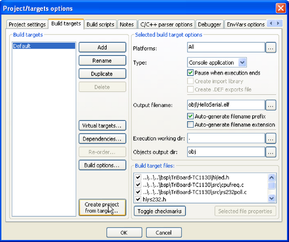
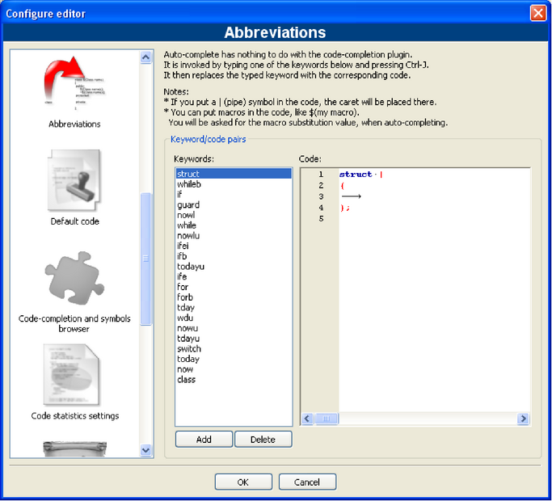
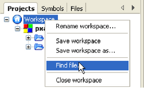
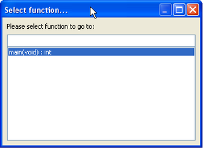
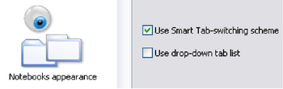
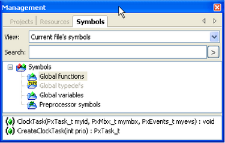
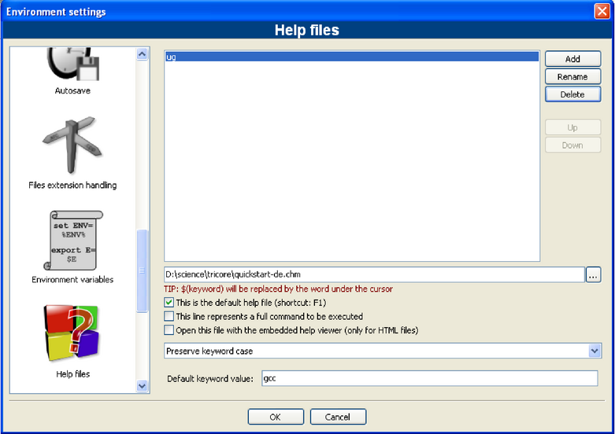
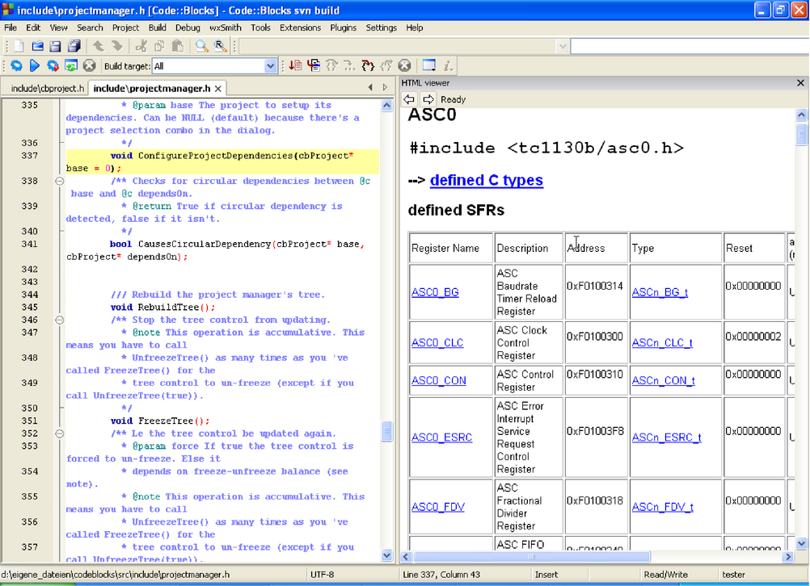
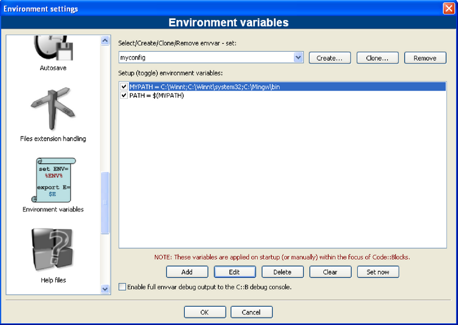
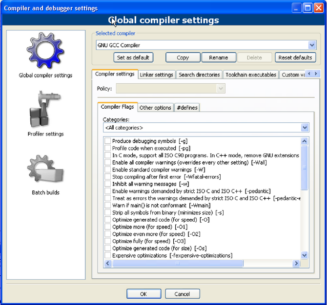

|
|
Die Dokumentation für Variable Expansion 3 und Building CodeBlocks from sources 4 sind offizielle Dokumentationen der CodeBlocks Wiki-Seite und nur in englischer Sprache verfügbar.
Die nachfolgende Abbildung zeigt den Aufbau der CodeBlocks Oberfläche.
|
|
Die Statusbar gibt einen Überblick der folgenden Einstellungen:
CodeBlocks bietet eine sehr flexible und umfassende Projektverwaltung. Der folgende Text geht nur auf einige Besonderheiten der Projektverwaltung ein.
In CodeBlocks werden Quellen und die Einstellungen für den Builtprozess in einer Projektdatei <name>.cbp gespeichert. Ein Projekt besteht typischerweise aus C/C++ Quellen und zugehörige Header Dateien. Ein neues Projekt legen Sie am einfachsten an, indem Sie das Menü ’File’ /’Project’ ausführen und einen Wizard auswählen. Anschließend können Sie im Management Fenster über das Kontextmenü ’Add files’ Dateien zum Projekt hinzufügen. In CodeBlocks werden die Projektdateien abhängig von ihrer Dateiendung in Kategorien verwalten. Die voreingestellen Kategorien sind für
Die Einstellungen für Typen und Kategorien von Dateien können über das Kontextmenü ’Project tree’ /’Edit file types & categories’ angepasst werden. Dabei können auch eigene Kategorien für Dateiendungen angelegt werden. Wenn Sie z.B. Linkerskripte mit der Endung *.ld unter der Kategorie Linkerscript anzeigen möchten, legen Sie einfach eine neue Kategorie an.
In CodeBlocks können zu Projekten sogenannte Notes hinterlegt werden. Diese sollten eine Kurzbeschreibung oder Hinweise für das jeweilige Projekt enthalten. Durch Anzeige dieser Information beim Öffnen des Projektes bekommen andere Bearbeiter einen schnellen Überblick. Die Anzeige von Notes kann bei den Properties eines Projektes im Reiter Notes aktiviert bzw. deaktiviert werden.
CodeBlocks wird mit einer Vielzahl von Projektvorlagen ausgeliefert, die beim Anlegen eines neuen Projektes angezeigt werden. Es ist aber auch möglich, eigene Vorlagen zu speichern und somit eigene Vorgaben für Compilerschalter, wie zu verwendete Optimierung, maschinenspezifische Schalter etc. in Vorlagen zusammenzufassen. Diese werden im Verzeichnis Dokumente und Einstellungen\<user>\Anwendungsdaten\codeblocks\UserTemplates abgelegt. Wenn die Vorlagen für alle Benutzer zugänglich sein sollen, müssen die Vorlagen in zugehöriges Verzeichnis der CodeBlocks Installation kopiert werden. Diese Vorlagen erscheinen dann beim nächsten Start von CodeBlocks unter ’New’ /’ Project’ /’User templates’ .
In Projekten ist es notwendig unterschiedliche Varianten eines Projektes vorzuhalten. Varianten werden als Build Target bezeichnet. Diese unterscheiden sich in der Regel durch unterschiedliche Compileroptionen, Debug-Information und Auswahl von Dateien. Ein Build Target kann auch in ein eigenständiges Projekt ausgelagert werden, dafür selektieren Sie in ’Project’ /’Properties’ den Reiter ’Build Targets’ die Variante und wählen Sie Schaltfläche ’Create project from target’ (siehe Build Targets 1.2).
|

|
Mit sogenannten Virtual Targets können Projekte in CodeBlocks weiter strukturiert werden. Eine häufige Projektstruktur besteht aus zwei Build Targets. Einem Target ’Debug’ mit Debuginformation und einem anderen Target ’Release’ ohne diese Information. Durch Hinzufügen von Virtual Targets unter ’Project’ /’Properties’ /’Build Targets’ können einzelne Build Targets zusammengefasst werden. So kann zum Beispiel ein Virtual Target ’All’ die Targets Debug und Release gleichzeitig erzeugen. Die Virtual Targets werden auch in der Symbolleiste des Compilers unter Build Targets angezeigt.
CodeBlocks ermöglicht es, weitere Arbeitschritte vor oder nach der Compilierung eines Projektes durchzuführen. Die Arbeitsschritte werden als Prebuilt bzw. Postbuilt Step bezeichnet. Typische Postbuilt Steps sind:
Beispiel
Erzeugung einer Disassembly aus einem Objekt unter Windows. Die Umlenkung in eine Datei erfordert den Aufruf der cmd mit der Option /c.
Ein weiteres Beispiel für ein Postbuilt Step kann die Archivierung eines Projektes sein. Hierzu erstellen Sie ein Build Target ’Archive’ und tragen im Postbuilt Step folgende Anweisung ein
Mit diesem Befehl wird das aktive Projekt und seine Quellen, Header und Objekte als Zip-Datei gepackt. Dabei werden über die Built-in Variablen $(PROJECT_NAME) und $(TODAY), der Projektname und das aktuelle Datum extrahiert (siehe Variable Expansion 3.2). Im Verzeichnis des Projektes liegt dann nach Ausführen des Targets ’Archive’ die gepackte Datei.
In dem Verzeichnis share/codeblocks/scripts finden Sie einige Beispiele für Skripte. Ein Skript kann über das Menü ’Settings’ /’Scripting’ hinzugefügt und in ein Menü eingetragen werden. Wenn Sie ein Skript z.B. make_dist über ein Menü ausführen, werden alle Dateien, die zum einem aktiven Projekt gehören in ein Archiv <project>.tar.gz komprimiert.
CodeBlocks bieten die Möglichkeit, Aktionen die vom Benutzer in Menüs ausgeführt werden, auch in Skripten zu verwenden. Mit dem Skript entsteht somit ein zusätzlicher Freiheitsgrad um die Generierung Ihres Projektes zu steuern.
In CodeBlocks können Sie mehrere Projekte geöffnet halten. Durch speichern der geöffneten Projekte über ’File’ /’Save workspace’ werden diese in einem Arbeitsbereich unter <name>.workspace zusammengefasst. Wenn Sie beim nächsten Start von CodeBlocks den Arbeitsbereich <name>.workspace öffnen erscheinen wieder alle Projekte.
Komplexe Softwaresysteme bestehen aus Komponenten, die in unterschiedlichen CodeBlocks Projekten verwaltet werden. Des weiteren existieren bei der Generierung von solchen Softwaresystemen oftmals Abhängigkeiten zwischen diesen Projekten.
Beispiel
Ein Projekt A enthält zentrale Funktionen, die auch anderen Projekten in Form einer Bibliothek zugänglich gemacht werden. Wenn nun diese Quellen eines Projektes geändert werden, muss die Bibliothek neu erzeugt werden. Damit die Konsistenz zwischen einem Projekt B, das die Funktionen verwendet und dem Projekt A, das die Funktionen implementiert, gewahrt bleibt, muss Projekt B von Projekt A abhängen. Die Information für die Abhängigkeit von Projekten wird im jeweiligen Workspace gespeichert, damit jedes Projekt weiterhin einzeln erzeugt werden kann. Durch die Verwendung von Abhängigkeiten kann auch die Reihenfolge bei der Generierung von Projekten gesteuert werden. Die Abhängigkeiten für Projekte werden über den Menüeintrag ’Project’ /’Properties’ und Auswahl der Schaltfläche ’Project’s dependencies’ gesetzt.
In der Projektansicht (Project View) im Fenter Management werden Assembler Dateien im Kategorie ASM Sources aufgeführt. Die Anzeige von Dateien und Kategorien kann vom Benutzer festgelegt werden (siehe Kapitel 1.1). Durch einen Rechtsklick einer der gelisteten Assembler Dateien erhält man ein Kontextmenü. Darin öffnet der Befehl ’Properties’ ein neues Fenster. Klicken Sie darin auf den Reiter ’Build’ und aktivieren Sie die beiden Felder ’Compile file’ und ’Link file’. Wechseln Sie nun auf den Reiter ’Advanced’ und führen Sie folgende Schritte durch:
Dabei sind die CodeBlocks Variablen durch $ gekennzeichnet (siehe Variable Expansion 3.4). Diese werden automatisch ersetzt, so dass Sie lediglich die Assembleroption <asopt> durch Ihre Einstellungen ersetzen brauchen.
Durch vorgegebene Coding Rules im Unternehmen müssen Quelldateien einen einheitlichen Aufbau vorweisen. CodeBlocks bietet die Möglichkeit, beim Anlegen von neuen C/C++ Quellen und Header einen vorgegebenen Inhalt am Anfang einer Datei automatisiert einzufügen. Die vorgebene Inhalt wird als Default Code bezeichnet. Die Einstellung hierfür kann unter ’Stettings’ /’Editor’ Default Code vorgenommen werden. Eine neue Datei erzeugen Sie über das Menü ’File’ /’New’ /’File’ .
Beispiel
Durch Definition von Abkürzung in CodeBlocks kann einiges an Schreibarbeit und Zeit gespart werden. Hierzu werden in ’Settings’ /’Editor’ sogenannte Abbreviations unter dem Namen <name> angelegt, die über das Tastenkürzel Ctrl-J aufgerufen werden (siehe Definition von Abkürzungen 1.3).
|

|
Durch Einfügen von Variablen $(NAME) in den Abkürzungen ist auch eine Parametrisierung möglich.
Bei Aufruf der Abkürzung <name> im Quelltext und Ausführen von Ctrl-J, wird der Inhalt der Variablen abgefragt und eingefügt.
CodeBlocks Einstellungen werden als Anwendungsdaten im Verzeichnis codeblocks in einer Datei <user>.conf gespeichert. Diese Konfigurationsdatei enthält Informationen wie beispielsweise zuletzt geöffnete Projekte, Einstellungen für Editor, Anzeige von Symbolleisten etc. Standardmäßig ist die Personality ’default’ eingestellt, so dass die Konfiguration in der Datei default.conf abgelegt ist. Wenn CodeBlocks mit dem Parameter --personality=myuser in der Kommandozeile aufgerufen wird, werden die Einstellungen in der Datei myuser.conf gespeichert. Falls das Profil nicht bereits existiert, wird es automatisch angelegt. Durch diese Vorgehensweise können für unterschiedliche durchzuführende Arbeitsschritte auch zugehörige Profile gespeichert werden. Wenn Sie CodeBlocks mit dem zusätzlichen Parameter --personality=ask starten erscheint ein Auswahldialog für die verfügbaren Profile.
Die Einstellungen für CodeBlocks werden im Profil default.conf im Ordner codeblocks in Ihren Anwendungsdaten gespeichert. Bei Verwendung von personalities (siehe Kapitel 1.10.3 werden die Konfiguration in der Datei <personality>.conf abgelegt.
Mit dem Werkzeug cb_share_conf, aus dem CodeBlocks Installationsverzeichnis, können diese Einstellungen verwaltet und gesichert werden.
Falls Sie Standardeinstellung für mehrere Benutzer eines PCs vorgeben möchten, muss die Konfigurationsdatei default.conf im Ordner \Dokumente und Einstellungen\Default User\Anwendungsdaten\codeblocks abgelegt sein. Beim ersten Start von CodeBlocks werden die Voreinstellungen aus ’Default User’ in die Anwendungsdaten der aktuellen Benutzers kopiert.
Zur Erzeugung einer portablen Version von CodeBlocks auf einem USB-Stick gehen Sie wie folgt vor. Kopieren Sie die CodeBlocks Installation auf einen USB-Stick und legen Sie die Konfigurationsdatei default.conf in dieses Verzeichnis. Die Konfiguration wird als globale Einstellung verwendet. Bitte achten Sie darauf, dass die Datei schreibbar sein muss, damit Änderungen in der Konfiguration auch gespeichert werden können.
In CodeBlocks existieren unterschiedliche Möglichkeiten zum schnellen Navigieren zwischen Dateien und Funktionen. Eine typische Vorgehensweise ist das Setzen von Lesezeichen (Bookmarks). Durch Betätigen des Tastenkürzel (Ctrl-B) wird ein Lesezeichen in einer Quelldatei gesetzt bzw. gelöscht. Mit (Alt-PgUp) wird zum vorherigen Lesezeichen gesprungen und mit (Alt-PgDn) zum nächsten gewechselt.
In der Projektansicht können Sie durch Auswählen eines Projektes oder im gesamten Workspace über das Kontextmenü ’Find file’ in einem Dialog einen Dateinamen angeben. Dieser wird anschließend in der Projektansicht markiert und durch Eingabe mit Return im Editor geöffnet (siehe Suche nach Dateien 1.4).
|

|
Für das schnelle Navigieren zwischen Header/Quelle Dateien bietet CodeBlocks folgende Möglichkeiten
|
|
CodeBlocks bietet verschiedene Möglichkeiten für die Suche in einer Datei oder in Verzeichnissen. Mit dem ’Search’ /’Find’ (Ctrl-F) oder ’Find in Files’ (Ctrl-Shift-F) öffnet sich der Dialog für die Suche.
Eine weitere komfortable Funktion bietet das Tastenkürzel Alt-G und Ctrl-Alt-G. Der sich öffnende Dialog erlaubt die Auswahl von Dateien/Funktionen und springt anschließend an die Implementierung der Funktion (siehe Suche nach Funktionen 1.6) bzw. öffnete die ausgewählte Datei. Als Eingabe werden auf Wildcards * oder ? etc. für eine inkrementelle Suche unterstützt.
|

|
Wenn Sie sich im Editor Fenster befinden, können Sie mit Ctrl-Tab zwischen den Reiter von geöffneten Dateien springen. Durch setzen der Einstellung ’Use Smart Tab-switching scheme’ in ’Settings’ /’Notebook appearance’ erhalten Sie nun über Ctrl-Tab ein zusätzliches Open Tabs Fenster im Editor (siehe Einstellungen für Wechseln zwischen Reitern 1.7). Dabei wird die Liste in der Reihenfolge der geöffneten Dateien gezeigt. Sie können die Tastenkombination Ctrl-Tab auch im Management Fenster verwenden, um in zwischen den Reitern zu wechseln.
|

|
Eine häufige Arbeitsweise bei der Entwicklung von Software ist jedoch, dass man sich durch ein Satz von Funktion hangelt, die in unterschiedlichen Dateien implementiert sind. Durch das Plugin Browse Tracker zeigt mit dem Fenster ’Browsed Tabs’ eine Liste in der Reihenfolge wie Dateien selektiert wurden. Somit können Sie komfortabel zwischen den Aufrufen navigieren (siehe Plugins 2.7).
In CodeBlocks aktivieren Sie die Anzeige von Zeilennummern in ’Settings’ /’General Settings’ im Feld ’Show line numbers’. Mit dem Tastenkürzel Ctrl-G oder über das Menü ’Search’ /’Goto line’ springen Sie an die gewünschte Zeile.
Für das Navigieren über Funktionen oder Variablen bietet das Management Fenster in CodeBlocks eine Baumansicht für Symbole von C/C++ Quellen. Dabei lässt sicht der Gültigkeitsbereich (Scope) der Ansicht auf die aktuelle Datei oder Projekt oder den gesamten Arbeitsbereich einstellen. Für die Kategorien der Symbole existieren folgende Kategorien.
|

|
Strukturen und Klassen werden unterhalb von Preprocessor symbols angezeigt. Wenn eine Kategorie mit der Maus angewählt wird, erscheinen die gefundenen Symbole in dem unteren Teil des Fensters (siehe Symbolansicht 1.8). Ein Doppelklick auf das Symbol öffnet die Datei, wo das Symbol definiert bzw. die Funktion implementiert ist und springt an die zugehörige Zeile.
Die Entwicklungsumgebung CodeBlocks unterstützt das Einbinden von externen Hilfen über das Menü ’Settings’ /’Environment’ . Fügen Sie ein Manual Ihrer Wahl im chm Format in ’Help Files’ hinzu und wählen Sie die Einstellung ’this is the default help file’ (siehe Einstellungen für Hilfe 1.9). Dabei steht im Eintrag $(keyword) als Platzhalter für einen Begriff der im Editor markiert wird. Nun können Sie in CodeBlocks in einer geöffneten Quelldatei eine Funktion mit der Maus durch Doppelklick markieren und anschließend die Hilfe mit F1 aufrufen und erhalten die zugehörige Dokumentation.
Wenn Sie mehrere Hilfedateien einbinden, können Sie im Editor einen Begriff markieren und anschließend über das Kontextmenü ’Locate in’ die Hilfedatei auswählen, in der CodeBlocks suchen soll.
|

|
In CodeBlocks werden auch die Hilfe mit man pages unterstützt. Hier fügen Sie einen neuen Eintrag ’man’ ein und geben den Pfad wie folgt an.
CodeBlocks bietet auch einen ’Embedded HTML Viewer’, hiermit können einfache HTML-Dateien in CodeBlocks angezeigt und für Suchen genutzt werden. Konfigurieren Sie einfach den Pfad der HTML-Datei, die durchsucht werden soll und aktivieren Sie die Option ’Open this file with embedded help viewer’ in dem Menü ’Settings’ /’Environment’ /’Help Files’ .
|

|
Die Einbindung von externen Tools ist in CodeBlocks unter dem Menüeintrag ’Tools’ /’Configure Tools’ /’Add’ vorgesehen. Für die Übergabeparameter der Tools kann auch auf Built-in Variables (see Variable Expansion 3.2) zugegriffen werden. Des weiteren existieren für das Starten von externen Anwendungen unterschiedliche Arten (Launching options). Je nach Option werden die extern gestarteten Anwendung beim Beenden von CodeBlocks gestoppt. Falls die Anwendungen auch beim Beenden von CodeBlocks geöffnet bleiben sollen, ist die Option ’Launch tool visible detached’ einzustellen.
In diesem Kapitel werden Ihnen einige nützliche Einstellungen in CodeBlocks vorgestellt.
Die Konfiguration für ein Betriebssystem wird durch sogenannte Umgebungsvariablen festgelegt. Zum Beispiel enthält die Umgebungsvariablen PATH den Pfad auf einen installierten Compiler. Das Betriebssystem geht diese Umgebungsvariable von vorne nach hinten durch, d.h. die Einträge am Ende werden als letztes durchsucht. Wenn nun unterschiedliche Versionen eines Compilers oder anderer Anwendungen installiert sind, können nun folgende Situationen auftreten:
Es könnte zum Beispiel notwendig sein, dass für unterschiedliche Projekte unterschiedliche Versionen eines Compilers oder anderer Werkzeugen vorgeschrieben sind. Eine Möglichkeit ist die Umgebungsvariablen in der Systemsteuerung jeweils für ein Projekt zu ändern. Diese Vorgehensweise ist jedoch fehleranfällig und nicht flexibel. Für diese Anforderung bietet CodeBlocks eine elegante Lösung. Es lassen sich hier unterschiedliche Konfigurationen von Umgebungsvariablen erstellen, die nur intern in CodeBlocks verwendet werden. Zusätzlich kann zwischen diesen Konfiguration umgeschaltet werden. Die Umgebungsvariablen 1.11 zeigt den Eingabedialog, den Sie über das Menü ’Settings’ /’Environment’ und Auswahl von ’Environment Varibales’ erhalten. Eine Konfiguration wird über die Schaltfläche ’Create’ erzeugt. Die Übernahme der hinzugefügten Umgebungsvariablen erfolgt durch Bestätigen des OK Knopfes. Das Aktivieren einer Konfiguration erfolgt über den Knopf Set Now.
|

|
Der Zugriff und der Gültigkeitkeitbereich auf die hier erstellten Umgebungsvariablen ist auf CodeBlocks begrenzt. Sie können diese Umgebungsvariablen wie auch andere CodeBlocks Variablen über $(NAME) expandieren.
Beispiel
Sie können die verwendete Umgebung in einem postbuild Step (siehe Kapitel 1.6) in einer Datei <project>.env schreiben und zu Ihrem Projekt archivieren.
oder unter Linux
Wenn mehrere Projekte oder Dateien gleichzeitig geöffnet sind, so will der Benutzer häufig zwischen den Projekten und Dateien schnell wechseln können. CodeBlocks stellt hierfür eine Reihe an Shortcuts zur Verfügung.
Beim Buildprozess eines Projektes werden die Ausgaben des Compilers in Fenster Messages im Reiter Build Log ausgegeben. Wenn Sie an detaillierten Information interessiert sind, kann die Ausgabe erweitert werden. Dazu wählen Sie unter ’Settings’ /’Compiler and Debugger’ im Reiter ’Other Settings’.
|

|
Achten Sie darauf, dass beim Eintrag Selected Compiler der gewünschte Compiler eingestellt ist. Die Einstellung ’Full command line’ im Feld Compiler Logging gibt die vollständige Information im Build Log aus. Zusätzlich kann diese Ausgabe in eine HTML-Datei geloggt werden. Hierzu ist die Einstellung ’Save build log to HTML file when finished’ erforderlich. Des weiteren bietet CodeBlocks eine Fortschrittsanzeige des Buildprozesses im Fenster Build Log. Diese aktivieren Sie mit dem Einstellung ’Display build progress bar’.
CodeBlocks bietet einen sehr leistungsfähigen Editor. Eine Besonderheit ist, dass Sie innerhalb einer geöffneten Datei die Darstellung vergrößern und verkleinern können. Wenn Sie eine Maus mit einem Scrollrad haben, halten Sie einfach die Ctrl-Taste gedrückt und scrollen im Editor über das Rad nach vorne oder hinten.
CodeBlocks unterstützt im Editor einen sogenannten Block select mode. Hiermit können bei gedrückter ’ALT’ Taste ein Rechteck mit der linken Maustaste aufziehen und kopieren bzw. einfügen. Dies ist zum Beispiel nützlich, wenn nur einige Spalten eines Array markiert und kopiert werden sollen.
CodeBlocks unterstützt ein sogenanntes Folding für Quellen. Hiermit lassen sich zum Beispiel Funktionen zusammenklappen. Ein Folding Punkt erkennen Sie im Editor als Minussymbol im linken Seitenrand. Hier wird auch der Beginn und das Ende eines Folding Punktes durch eine vertikale Linie gekennzeichnet. Wenn Sie mit der linken Maustaste auf das Minussymbol klicken wir der entsprechende Abschnitt eingekappt bzw. ausgeklappt. Sie können über das Menu ’Edit’ /’Folding’ einstellen wie eingeklappt werden soll. Im Editor wird ein eingeklappte Codestelle durch eine durchgehende horizontale Linie dargestellt.
Neben dem Folding für Funktionen kann die Funktionalität auch für Präprozessor Direktiven eingestellt werden. Aktivieren Sie hierfür die Option ’Fold preprocessor commands’ im Menü ’Settings’ /’Editor’ unter dem Eintrag Folding.
Eine weitere Möglichkeit ist benutzerdefinierte Folding Punkte zu definieren, indem ein Kommentarzeichen durch eine geöffnete Klammer den Anfang und ein Kommentar mit schließender Klammer das Ende markiert.
CodeBlocks parst beim Öffnen eines Projektes die ’Search directories’ die für einen Compiler oder Projekt eingestellt wurden und die im Projekt befindlichen Quellen und Header. Des weiteren werden auch die Keywords der zugehörigen Lexerdateien geparst. Die aus dem Parsen gewonne Information über Symbole kann für die sogenannte Auto completion genutzt werden, wenn diese in den Einstellungen des Editors für CodeBlocks aktiviert ist. Die Auto completion können Sie im Editor über das Tastenkürzel Ctrl-Space ausführen. Im Menü ’Settings’ /’Editor’ /’Syntax highlighting’ können eigene keywords zum Lexer hinzugefügt werden.
In den Builtoption eines Projektes können Sie unter ’Linker Settings’ im Eintrag ’Link libraries’ über die Schaltfläche ’Add’ verwendete Bibliotheken hinzufügen. Dabei können Sie entweder den absoluten Pfad zur Bibliothek durchsuchen oder nur den Namen ohne den Prefix lib und die Dateiendung angeben.
Beispiel
Für eine Bibliothek <path>\libs\lib<name>.a geben Sie einfach <name> an. Der Linker mit den jeweiligen Suchpfaden für die Bibliotheken bindet diese dann korrekt ein.
Beim Compilierung werden aus Quellen name.c/cpp werden Objekte name.o erzeugt. Der Linker bindet die einzelnen Objekten zu einer Anwendung name.exe oder für den Embedded Bereiche name.elf. In einigen Fällen ist es wünschenswert die Reihenfolge für das Binden von Objekten vorzugeben. In CodeBlocks kann dies durch die Vergabe von sogenannten Prioritäten erzielt werden. Stellen Sie für eine Datei über das Kontextmenü ’Properties’ im Reiter Build die Priorität ein. Dabei führt eine geringe Priorität des Objekts dazu, dass es zu erst gebunden wird.
CodeBlocks bietet die Möglichkeit Projekte und Quelldateien automatisch zu speichern bzw. eine Sicherungskopie anzulegen. Diese Funktionalität wird im Menü ’Settings’ /’Environment’ /’Autosave’ eingestellt. Dabei sollte als ’Save to .save file’ als Methode für das Erstellen einer Sicherungskopie eingestellt werden.
In CodeBlocks können Sie zwischen verschiedenen Arten der Behandlung von Dateiendungen wählen. Die Einstellungen erhalten Sie über ’Settings’ /’Files extension handling’ . Sie können entweder die von Windows zugeordneten Anwendungen (open it with the associated application) für entsprechende Dateiendungen verwenden oder für jede Dateiendungen die Einstellungen so ändern, dass entweder ein benutzerdefiniertes Programm (launch an external program) gestartet wird oder die Datei in Editor von CodeBlocks geöffnet wird (open it inside Code::Blocks editor).
Die IDE CodeBlocks kann auch ohne grafische Oberfläche in der Kommandozeile ausgeführt werden. Dabei stehen unterschiedliche Schalter zur Verfügung um den Buildprozess eines Projektes zu steuern. Da CodeBlocks somit skriptfähig ist, kann die Erzeugung von Exectutables in eigene Arbeitsabläufe integriert werden.
Specifies the project *.cbp filename or workspace *.workspace filename. For instance, <filename> may be project.cbp. Place this argument at the end of the command line, just before the output redirection if there is any.
Shows a help message regarding the command line arguments.
Don’t perform any file association checks (Windows only).
Don’t start a DDE server (Windows only).
Hides the splash screen while the application is loading.
Display the debug log of the application.
Sets the shared data directory prefix.
Sets the personality to use. You can use ask as the parameter to list all available personalities.
Clean and build the project or workspace.
Build the project or workspace.
Sets target for batch build. For example --target=’Release’.
Keeps the batch log window visible after the batch build is completed.
Shows a message after the batch build is completed.
Alle Plugins werden beim Start deaktiviert.
Placed in the very last position of the command line, this may be used to redirect standard output to log file. This is not a codeblock option as such, but just a standard DOS/*nix shell output redirection.
Auch wenn man eine IDE wie CodeBlocks überwiegend mit der Maus bedient, erweisen sich dennoch Tastenkombinationen immer wieder als hilfreich, um die Arbeit zu vereinfachen und zu beschleunigen. In nachstehender Tabelle sind einige verfügbare Tastenkombinationen zusammengefasst.
This is a list of shortcuts provided by the CodeBlocks editor component. These shortcuts cannot be rebound.